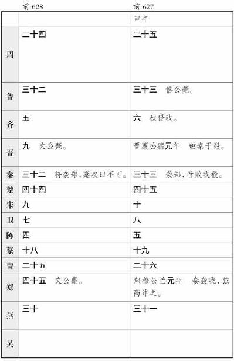

史记卷十
孝文本纪第十
孝文皇帝 ，高祖 中子也。高祖 十一年春，已破陈豨 军，定代 地，立为代王 ，都中都 。太后薄氏 子。即位十七年，高后 八年七月，高后 崩。九月，诸吕吕产 等欲为乱，以危刘氏 ，大臣共诛之。谋召立代王 ，事在吕后 语中。
丞相陈平 、太尉周勃 等使人迎代王 。代王 问左右郎中令张武 等。张武 等议曰：“汉 大臣皆故高帝 时大将，习兵，多谋诈，此其属意非止此也，特畏高帝 、吕太后 威耳。今已诛诸吕 ，新睫血京师，此以迎大王为名，实不可信。愿大王称疾毋往，以观其变。”中尉宋昌 进曰：“群臣之议皆非也。夫秦 失其政，诸侯豪桀并起，人人自以为得之者以万数，然卒践天子之位者，刘氏 也，天下绝望，一矣。高帝 封王子弟，地犬牙相制，此所谓盘石之宗也，天下服其强，二矣。汉 兴，除秦 苛政，约法令，施德惠，人人自安，难动摇，三矣。夫以吕太后 之严，立诸吕 为三王，擅权专制，然而太尉以一节入北军，一呼士皆左袒，为刘氏 ，叛诸吕 ，卒以灭之。此乃天授，非人力也。今大臣虽欲为变，百姓弗为使，其党宁能专一邪？方今内有朱虚 、东牟 之亲，外畏吴 、楚 、淮南 、琅邪 、齐 、代 之强。方今高帝 子独淮南王 与大王，大王又长，贤圣仁孝，闻于天下，故大臣因天下之心而欲迎立大王，大王勿疑也。”代王 报太后计之，犹与未定。卜之龟，卦兆得大横。占曰：“大横庚庚，余为天王，夏启 以光。”代王 曰：“寡人固已为王矣，又何王？”卜人曰：“所谓天王者乃天子。”于是代王 乃遣太后弟薄昭 往见绛侯 ，绛侯 等具为昭 言所以迎立王意。薄昭 还报曰：“信矣，毋可疑者。”代王 乃笑谓宋昌 曰：“果如公言。”乃命宋昌 参乘，张武 等六人乘传诣长安 。至高陵 休止，而使宋昌 先驰之长安 观变。
昌 至渭桥 ，丞相以下皆迎。宋昌 还报。代王 驰至渭桥 ，群臣拜谒称臣。代王 下车拜。太尉勃 进曰：“愿请间言。”宋昌 曰：“所言公，公言之。所言私，王者不受私。”太尉乃跪上天子玺符。代王 谢曰：“至代邸 而议之。”遂驰入代邸 。群臣从至。丞相陈平 、太尉周勃 、大将军陈武 、御史大 夫张苍 、宗正刘郢 、朱虚侯刘章 、东牟侯刘兴居 、典客刘揭 皆再拜言曰：“子弘 等皆非孝惠帝 子，不当奉宗庙。臣谨请阴安侯 列侯顷王后 与琅邪王 、宗室、大臣、列侯、吏二千石议曰：‘大王高帝 长子，宜为高帝 嗣。’愿大王即天子位。”代王 曰：“奉高帝 宗庙，重事也。寡人不佞，不足以称宗庙。愿请楚王 计宜者，寡人不敢当。”群臣皆伏固请。代王 西乡让者三，南乡让者再。丞相平 等皆曰：“臣伏计之，大王奉高帝 宗庙最宜称，虽天下诸侯万民以为宜。臣等为宗庙社稷计，不敢忽。愿大王幸听臣等。臣谨奉天子玺符再拜上。”代王 曰：“宗室将相王列侯以为莫宜寡人，寡人不敢辞。”遂即天子位。
群臣以礼次侍。乃使太仆婴
与东牟侯兴居
清宫，奉天子法驾，迎于代邸
。皇帝即日夕入未央宫
。乃夜拜宋昌
为卫将军，镇抚南北军。以张武
为郎中令，行殿中。还坐前殿。于是夜下诏书曰：“间者诸吕
用事擅权，谋为大逆，欲以危刘氏
宗庙，赖将相列侯宗室大臣诛之，皆伏其辜。朕初即位，其赦天下，赐民爵一级，女子百户牛酒，酺五日。”
孝文皇帝 元年十月庚戌，徙立故琅邪王泽 为燕王 。
辛亥，皇帝即阼，谒高庙 。右丞相平 徙为左丞相，太尉勃 为右丞相，大将军灌婴 为太尉。诸吕 所夺齐楚 故地，皆复与之。
壬子，遣车骑将军薄昭 迎皇太后于代 。皇帝曰：“吕产 自置为相国，吕禄 为上将军，擅矫遣灌将军婴 将兵击齐 ，欲代刘氏 ，婴 留荥阳 弗击，与诸侯合谋以诛吕氏 。吕产 欲为不善，丞相陈平 与太尉周勃 谋夺吕产 等军。朱虚侯刘章 首先捕吕产 等。太尉身率襄平侯通 持节承诏入北军。典客刘揭 身夺赵王吕禄 印。益封太尉勃 万户，赐金五千斤。丞相陈平 、灌将军婴 邑各三千户，金二千斤。朱虚侯刘章 、襄平侯通 、东牟侯刘兴居 邑各二千户，金千斤。封典客揭 为阳信侯 ，赐金千斤。”
十二月，上曰：“法者，治之正也，所以禁暴而率善人也。今犯法已论，而使毋罪之父母妻子同产坐之，及为收帑，朕甚不取。其议之。”有司皆曰：“民不能自治，故为法以禁之。相坐坐收，所以累其心，使重犯法，所从来远矣。如故便。”上曰：“朕闻法正则民悫，罪当则民从。且夫牧民而导之善者，吏也。其既不能导，又以不正之法罪之，是反害于民为暴者也。何以禁之？朕未见其便，其孰计之。”有司皆曰：“陛下加大惠，德甚盛，非臣等所及也。请奉诏书，除收帑诸相坐律令。”
正月，有司言曰：“蚤建太子，所以尊宗庙。请立太子。”上曰：“朕既不 德，上帝神明未歆享，天下人民未有嗛志。今纵不能博求天下贤圣有德之人而禅天下焉，而曰豫建太子，是重吾不德也。谓天下何？其安之。”有司曰：“豫建太子，所以重宗庙社稷，不忘天下也。”上曰：“楚王 ，季父也，春秋高，阅天下之义理多矣，明于国家之大体。吴王 于朕，兄也，惠仁以好德。淮南王 ，弟也，秉德以陪朕。岂为不豫哉！诸侯王宗室昆弟有功臣，多贤及有德义者，若举有德以陪朕之不能终，是社稷之灵，天下之福也。今不选举焉，而曰必子，人其以朕为忘贤有德者而专于子，非所以忧天下也。朕甚不取也。”有司皆固请曰：“古者殷周 有国，治安皆千馀岁，古之有天下者莫长焉，用此道也。立嗣必子，所从来远矣。高帝 亲率士大夫，始平天下，建诸侯，为帝者太祖。诸侯王及列侯始受国者皆亦为其国祖。子孙继嗣，世世弗绝，天下之大义也，故高帝 设之以抚海内。今释宜建而更选于诸侯及宗室，非高帝 之志也。更议不宜。子某最长，纯厚慈仁，请建以为太子。”上乃许之。因赐天下民当代父后者爵各一级。封将军薄昭 为轵侯 。
三月，有司请立皇后。薄太后 曰：“诸侯皆同姓，立太子母为皇后。”皇后姓窦氏 。上为立后故，赐天下鳏寡孤独穷困及年八十已上孤儿九岁已下布帛米肉各有数。上从代 来，初即位，施德惠天下，填抚诸侯四夷皆洽欢，乃循从代 来功臣。上曰：“方大臣之诛诸吕 迎朕，朕狐疑，皆止朕，唯中尉宋昌 劝朕，朕以得保奉宗庙。已尊昌 为卫将军，其封昌 为壮武侯 。诸从朕六人，官皆至九卿。”
上曰：“列侯从高帝 入蜀 、汉中 者六十八人皆益封各三百户，故吏二千石以上从高帝颍川 守尊 等十人食邑六百户，淮阳 守申徒嘉 等十人五百户，卫尉定 等十人四百户。封淮南王 舅父赵兼 为周阳侯 ，齐王 舅父驷钧 为清郭侯 。”秋，封故常山 丞相蔡兼 为樊侯 。
人或说右丞相曰：“君本诛诸吕
，迎代王
，今又矜其功，受上赏，处尊位，祸且及身。”右丞相勃
乃谢病免罢，左丞相平
专为丞相。
二年十月，丞相平 卒，复以绛侯勃 为丞相。上曰：“朕闻古者诸侯建国千馀，各守其地，以时入贡，民不劳苦，上下欢欣，靡有遗德。今列侯多居长安 ，邑远，吏卒给输费苦，而列侯亦无由教驯其民。其令列侯之国，为吏及诏所止者，遣太子。”
十一月晦，日有食之。十二月望，日又食。上曰：“朕闻之，天生蒸民，为之置君以养治之。人主不德，布政不均，则天示之以菑，以诫不治。乃 十一月晦，日有食之，適见于天，菑孰大焉！朕获保宗庙，以微眇之身托于兆民君王之上，天下治乱，在朕一人，唯二三执政犹吾股肱也。朕下不能理育群生，上以累三光之明，其不德大矣。令至，其悉思朕之过失，及知见思之所不及，匄以告朕。及举贤良方正能直言极谏者，以匡朕之不逮。因各饬其任职，务省繇费以便民。朕既不能远德，故悯然念外人之有非，是以设备未息。今纵不能罢边屯戍，而又饬兵厚卫，其罢卫将军军。太仆见马遗财足，馀皆以给传置。”
正月，上曰：“农，天下之本，其开籍田，朕亲率耕，以给宗庙粢盛。”
三月，有司请立皇子为诸侯王。上曰：“赵幽王 幽死，朕甚怜之，已立其长子遂 为赵王 。遂 弟辟彊 及齐悼惠王 子朱虚侯章 、东牟侯兴居 有功，可王。”乃立赵幽王 少子辟彊 为河间王 ，以齐 剧郡立朱虚侯 为城阳王 ，立东牟侯 为济北王 ，皇子武 为代王 ，子参 为太原王 ，子揖 为梁王 。
上曰：“古之治天下，朝有进善之旌，诽谤之木，所以通治道而来谏者。今法有诽谤妖言之罪，是使众臣不敢尽情，而上无由闻过失也。将何以来远方之贤良？其除之。民或祝诅上以相约结而后相谩，吏以为大逆，其有他言，而吏又以为诽谤。此细民之愚无知抵死，朕甚不取。自今以来，有犯此者勿听治。”
九月，初与郡国守相为铜虎符、竹使符。
三年十月丁酉晦，日有食之。十一月，上曰：“前日诏遣列侯之国，或辞未行。丞相朕之所重，其为朕率列侯之国。”绛侯勃 免丞相就国，以太尉颍阴侯婴 为丞相。罢太尉官，属丞相。四月，城阳王章 薨。淮南王长 与从者魏敬 杀辟阳侯审食其 。
五月，匈奴 入北地 ，居河南 为寇。帝初幸甘泉 。六月，帝曰：“汉 与匈奴 约为昆弟，毋使害边境，所以输遗匈奴 甚厚。今右贤王离其国，将众居河南 降地，非常故，往来近塞，捕杀吏卒，驱保塞蛮夷，令不得居其故，陵轹边吏，入盗，甚敖无道，非约也。其发边吏骑八万五千诣高奴 ，遣丞相颍阴侯灌婴 击匈奴 。”匈奴 去，发中尉材官属卫将军军长安 。
辛卯，帝自甘泉 之高奴 ，因幸太原 ，见故群臣，皆赐之。举功行赏，诸民里赐牛酒。复晋阳中都 民三岁。留游太原 十馀日。
济北王兴居
闻帝之代
，欲往击胡
，乃反，发兵欲袭荥阳
。于是诏罢丞相兵，遣棘蒲侯陈武
为大将军，将十万往击之。祁侯贺
为将军，军荥阳
。七月辛亥，帝自太原
至长安
。乃诏有司曰：“济北王
背德反上，诖误吏民，
为大逆。济北
吏民兵未至先自定，及以军地邑降者，皆赦之，复官爵。与王兴居
去来，亦赦之。”八月，破济北
军，虏其王。赦济北
诸吏民与王反者。
六年，有司言淮南王长
废先帝法，不听天子诏，居处毋度，出入拟于天子，擅为法令，与棘蒲侯
太子奇
谋反，遣人使闽越
及匈奴
，发其兵，欲以危宗庙社稷。群臣议，皆曰“长
当弃市”。帝不忍致法于王，赦其罪，废勿王。群臣请处王蜀严道
、邛邮
，帝许之。长
未到处所，行病死，上怜之。后十六年，追尊淮南王长
谥为厉王
，立其子三人为淮南王
、衡山王
、庐江王。
十三年夏，上曰：“盖闻天道祸自怨起而福繇德兴。百官之非，宜由朕躬。今秘祝之官移过于下，以彰吾之不德，朕甚不取。其除之。”
五月，齐 太仓令淳于公 有罪当刑，诏狱逮徙系长安 。太仓公无男，有女五人。太仓公将行会逮，骂其女曰：“生子不生男，有缓急非有益也！”其少女缇萦 自伤泣，乃随其父至长安 ，上书曰：“妾父为吏，齐 中皆称其廉平，今坐法当刑。妾伤夫死者不可复生，刑者不可复属，虽复欲改过自新，其道无由也。妾愿没入为官婢，赎父刑罪，使得自新。”书奏天子，天子怜悲其意，乃下诏曰：“盖闻有虞氏 之时，画衣冠异章服以为僇，而民不犯。何则？至治也。今法有肉刑三，而奸不止，其咎安在？非乃朕德薄而教不明欤？吾甚自愧。故夫驯道不纯而愚民陷焉。诗 曰‘恺悌君子，民之父母’。今人有过，教未施而刑加焉，或欲改行为善而道毋由也。朕甚怜之。夫刑至断支体，刻肌肤，终身不息，何其楚痛而不德也，岂称为民父母之意哉！其除肉刑。”
上曰：“农，天下之本，务莫大焉。今勤身从事而有租税之赋，是为本末者毋以异，其于劝农之道未备。其除田之租税。”
十四年冬，匈奴
谋入边为寇，攻朝
 塞
，杀北地
都尉卬
。上乃遣三将军军陇西
、北地
、上郡
，中尉周舍
为卫将军，郎中令张武
为车骑将军，军渭北
，车千乘，骑卒十万。帝亲自劳军，勒兵申教令，赐军吏卒。帝欲自将击匈奴
，群臣谏，皆不听。皇太后固要帝，帝乃止。于是以东阳侯张相如
为大将军，成侯赤
为内史，栾布
为将军，击匈奴
。匈奴
遁走。
塞
，杀北地
都尉卬
。上乃遣三将军军陇西
、北地
、上郡
，中尉周舍
为卫将军，郎中令张武
为车骑将军，军渭北
，车千乘，骑卒十万。帝亲自劳军，勒兵申教令，赐军吏卒。帝欲自将击匈奴
，群臣谏，皆不听。皇太后固要帝，帝乃止。于是以东阳侯张相如
为大将军，成侯赤
为内史，栾布
为将军，击匈奴
。匈奴
遁走。
春，上曰：“朕获执牺牲珪币以事上帝宗庙，十四年于今，历日绵长，以不敏不明而久抚临天下，朕甚自愧。其广增诸祀 场珪币。昔先王远施不求其报，望祀不祈其福，右贤左戚，先民后己，至明之极也。今吾闻祠官 祝釐，皆归福朕躬，不为百姓，朕甚愧之。夫以朕不德，而躬享独美其福，百姓不与焉，是重吾不德。其令祠官致敬，毋有所祈。”
是时北平侯张苍
为丞相，方明律历。鲁
人公孙臣
上书陈终始传五德事，言方今土德时，土德应黄龙见，当改正朔服色制度。天子下其事与丞相议。丞相推以为今水德，始明正十月上黑事，以为其言非是，请罢之。
十五年，黄龙见成纪
，天子乃复召鲁公孙臣
，以为博士，申明土德事。于是上乃下诏曰：“有异物之神见于成纪
，无害于民，岁以有年。朕亲郊祀上帝诸神。礼官议，毋讳以劳朕。”有司礼官皆曰：“古者天子夏躬亲礼祀上帝于郊，故曰郊。”于是天子始幸雍
，郊见五帝
，以孟夏四月答礼焉。赵
人新垣平
以望气见，因说上设立渭阳
五庙。欲出周
鼎，当有玉英见。
十六年，上亲郊见渭阳五帝庙
，亦以夏答礼而尚赤。
十七年，得玉杯，刻曰“人主延寿”。于是天子始更为元年，令天下大酺。其岁，新垣平
事觉，夷三族。
后二年，上曰：“朕既不明，不能远德，是以使方外之国或不宁息。夫四荒之外不安其生，封畿之内勤劳不处，二者之咎，皆自于朕之德薄而不能远达也。间者累年，匈奴
并暴边境，多杀吏民，边臣兵吏又不能谕吾内志，以重吾不德也。夫久结难连兵，中外之国将何以自宁？今朕夙兴夜寐，勤劳天下，忧苦万民，为之怛惕不安，未尝一日忘于心，故遣使者冠盖相望，结轶于道，以谕朕意于单于。今单于反古之道，计社稷之安，便万民之利，亲与朕俱弃细过，偕之大道，结兄弟之义，以全天下元元之民。和亲已定，始于今年。”
后六年冬，匈奴 三万人入上郡 ，三万人入云中 。以中大夫令勉 为车骑将军，军飞狐 ；故楚 相苏意 为将军，军句注 ；将军张武 屯北地 ；河内 守周亚夫 为将军，居细柳 ；宗正刘礼 为将军，居霸上 ；祝兹侯 军棘门 ：以备胡 。数月，胡 人去，亦罢。
天下旱，蝗。帝加惠：令诸侯毋入贡，弛山泽，减诸服御狗马，损郎吏员，发仓庾以振贫民，民得卖爵。
孝文帝
从代
来，即位二十三年，宫室苑囿狗马服御无所增益，有不便，
辄弛以利民。尝欲作露台，召匠计之，直百金。上曰：“百金中民十家之产，吾奉先帝宫室，常恐羞之，何以台为！”上常衣绨衣，所幸慎夫人
，令衣不得曳地，帏帐不得文绣，以示敦朴，为天下先。治霸陵
皆以瓦器，不得以金银铜锡为饰，不治坟，欲为省，毋烦民。南越王尉佗
自立为武帝
，然上召贵尉佗
兄弟，以德报之，佗
遂去帝称臣。与匈奴
和亲，匈奴
背约入盗，然令边备守，不发兵深入，恶烦苦百姓。吴王
诈病不朝，就赐几杖。群臣如袁盎
等称说虽切，常假借用之。群臣如张武
等受赂遗金钱，觉，上乃发御府金钱赐之，以愧其心，弗下吏。专务以德化民，是以海内殷富，兴于礼义。
后七年六月己亥，帝崩于未央宫 。遗诏曰：“朕闻盖天下万物之萌生，靡不有死。死者天地之理，物之自然者，奚可甚哀。当今之时，世咸嘉生而恶死，厚葬以破业，重服以伤生，吾甚不取。且朕既不德，无以佐百姓；今崩，又使重服久临，以离寒暑之数，哀人之父子，伤长幼之志，损其饮食，绝鬼神之祭祀，以重吾不德也，谓天下何！朕获保宗庙，以眇眇之身托于天下君王之上，二十有馀年矣。赖天地之灵，社稷之福，方内安宁，靡有兵革。朕既不敏，常畏过行，以羞先帝之遗德；维年之久长，惧于不终。今乃幸以天年，得复供养于高庙 ，朕之不明与嘉之，其奚哀悲之有！其令天下吏民，令到出临三日，皆释服。毋禁取妇嫁女祠祀饮酒食肉者。自当给丧事服临者，皆无践。绖带无过三寸，毋布车及兵器，毋发民男女哭临宫殿。宫殿中当临者，皆以旦夕各十五举声，礼毕罢。非旦夕临时，禁毋得擅哭。已下，服大红十五日，小红十四日，纤七日，释服。佗不在令中者，皆以此令比率从事。布告天下，使明知朕意。霸陵 山川因其故，毋有所改。归夫人以下至少使。”令中尉亚夫 为车骑将军，属国悍 为将屯将军，郎中令武 为复土将军，发近县见卒万六千人，发内史卒万五千人，藏郭穿复土属将军武 。
乙巳，群臣皆顿首上尊号曰孝文皇帝 。
太子即位于高庙
。丁未，袭号曰皇帝。
孝景皇帝
元年十月，制诏御史：“盖闻古者祖有功而宗有德，制礼乐各有由。闻歌者，所以发德也；舞者，所以明功也。高庙
酎，奏武德
、文始
、五行
之舞。孝惠庙
酎，奏文始
、五行
之舞。孝文皇帝
临天下，通关梁，不异远方。除诽谤，去肉刑，赏赐长老，收恤孤独，以育群生。减嗜欲，不受献，不私其利也。罪人不帑，不诛无罪。除宫刑，出美人，重绝人之世。朕既不
敏，不能识。此皆上古之所不及，而孝文皇帝
亲行之。德厚侔天地，利泽施四海，靡不获福焉。明象乎日月，而庙乐不称，朕甚惧焉。其为孝文皇帝庙
为昭德
之舞，以明休德。然后祖宗之功德著于竹帛，施于万世，永永无穷，朕甚嘉之。其与丞相、列侯、中二千石、礼官具为礼仪奏。”丞相臣嘉
等言：“陛下永思孝道，立昭德
之舞以明孝文皇帝
之盛德，皆臣嘉
等愚所不及。臣谨议：世功莫大于高皇帝
，德莫盛于孝文皇帝
，高皇庙
宜为帝者太祖之庙，孝文皇帝庙
宜为帝者太宗之庙。天子宜世世献祖宗之庙。郡国诸侯宜各为孝文皇帝
立太宗之庙。诸侯王列侯使者侍祠天子，岁献祖宗之庙。请著之竹帛，宣布天下。”制曰：“可。”
太史公 曰：孔子 言“必世然后仁。善人之治国百年，亦可以胜残去杀”。诚哉是言！汉 兴，至孝文 四十有馀载，德至盛也。廪廪乡改正服封禅矣，谦让未成于今。呜呼，岂不仁哉！